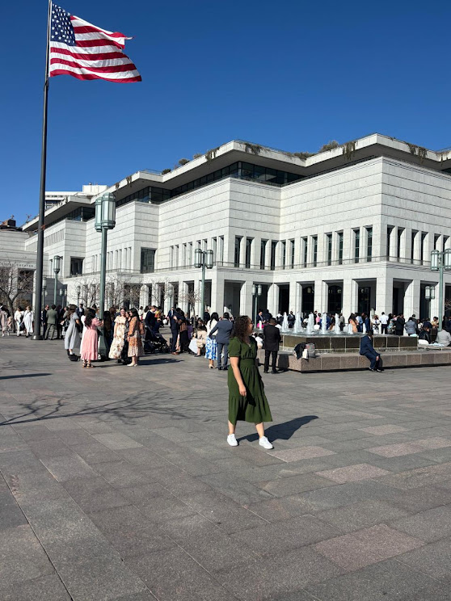

Jéssica Seniw | WDD 130

Hello! My name is Jéssica Seniw, and I am originally from Brazil. I am currently pursuing a degree in Web Development because I have a strong passion for technology and creativity. In my free time, I enjoy hiking, reading, and exploring new places. I am excited to be part of this course and look forward to learning more about web development and enhancing my skills.
My Favorite Temples
-
Provo City Center
Temple | Porto Alegre Brazil Temple | João Pessoa
Brazil Temple